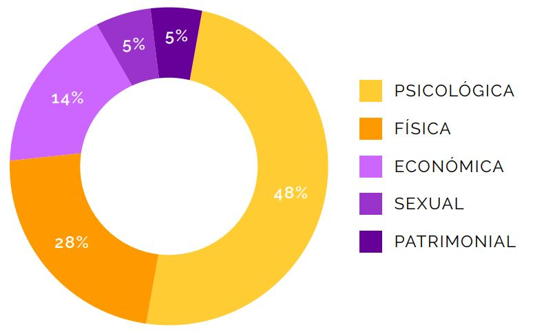

Estadísticas
Encuentra lugares donde podrán brindarte ayuda si tienes una situación de violencia doméstica.

De las llamadas y mensajes recibidos, 1.434 requirieron atención profunda. De estos, la mitad por violencia psicológica y un poco más de una cuarta parte por violencia física. La violencia económica representó el 14 por ciento de las denuncias detalladas; la violencia sexual el 5 por ciento; la violencia patrimonial el 4 por ciento y la violencia verbal el 1 por ciento.